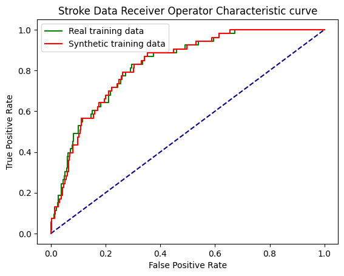

import matplotlib.pyplot as plt
import numpy as np
import pandas as pd
# Import machine learning methods
from sklearn.linear_model import LogisticRegression
from sklearn.model_selection import train_test_split
from sklearn.preprocessing import StandardScaler
from sklearn.metrics import auc
from sklearn.metrics import roc_curve
from sklearn.neighbors import NearestNeighbors
# Import package for SMOTE
import imblearn
# import SMOTE from imblearn so we can use it
from imblearn.over_sampling import SMOTE
# Turn warnings off to keep notebook clean
import warnings
warnings.filterwarnings("ignore")22 Exercise Solution: Synthetic Data (Stroke Thromobolysis Dataset)
22.0.1 Load Packages
22.0.2 Read CSV into Pandas DataFrame
data = pd.read_csv('data/processed_stroke.csv')
# Make all data 'float' type and drop ID
data = data.astype(float)
data.drop('id', axis=1, inplace=True) # Remove ID column22.0.3 Record number in each class
# Record number in each class
number_positive_stroke = np.sum(data['stroke'] == 1)
number_negative_stroke = np.sum(data['stroke'] == 0)
print (f"Positives : {number_positive_stroke}")
print (f"Negatives : {number_negative_stroke}")Positives : 209
Negatives : 470022.0.4 Divide into X (features) and y (labels)
X = data.drop('stroke',axis=1) # X = all 'data' except the 'stroke' column
y = data['stroke'] # y = 'stroke' column from 'data'22.0.5 Divide into training and test sets
X_train, X_test, y_train, y_test = train_test_split(X, y, test_size = 0.25)22.0.6 Show examples from the training data
X_train.head()| gender_male | gender_female | gender_other | age | hypertension | heart_disease | ever_married | work_type_private | work_type_self_employed | work_type_govt_job | work_type_children | work_type_never_worked | residence_type_rural | avg_glucose_level | bmi | smoking_status_smokes | smoking_status_formerly_smoked | smoking_status_never_smoked | smoking_status_unknown | |
|---|---|---|---|---|---|---|---|---|---|---|---|---|---|---|---|---|---|---|---|
| 4502 | 1.0 | 0.0 | 0.0 | 55.0 | 0.0 | 0.0 | 1.0 | 0.0 | 1.0 | 0.0 | 0.0 | 0.0 | 1.0 | 97.68 | 47.1 | 0.0 | 1.0 | 0.0 | 0.0 |
| 1752 | 1.0 | 0.0 | 0.0 | 18.0 | 0.0 | 0.0 | 0.0 | 1.0 | 0.0 | 0.0 | 0.0 | 0.0 | 1.0 | 89.61 | 22.0 | 0.0 | 0.0 | 1.0 | 0.0 |
| 4317 | 1.0 | 0.0 | 0.0 | 3.0 | 0.0 | 0.0 | 0.0 | 0.0 | 0.0 | 0.0 | 1.0 | 0.0 | 0.0 | 72.76 | 18.8 | 0.0 | 0.0 | 0.0 | 1.0 |
| 1538 | 0.0 | 1.0 | 0.0 | 53.0 | 0.0 | 0.0 | 1.0 | 0.0 | 0.0 | 1.0 | 0.0 | 0.0 | 0.0 | 83.79 | 44.0 | 0.0 | 0.0 | 0.0 | 1.0 |
| 1912 | 0.0 | 1.0 | 0.0 | 50.0 | 0.0 | 0.0 | 1.0 | 1.0 | 0.0 | 0.0 | 0.0 | 0.0 | 0.0 | 95.01 | 26.2 | 0.0 | 1.0 | 0.0 | 0.0 |
22.0.7 Standardise data
def standardise_data(X_train, X_test):
# Initialise a new scaling object for normalising input data
sc = StandardScaler()
# Set up the scaler just on the training set
sc.fit(X_train)
# Apply the scaler to the training and test sets
train_std=sc.transform(X_train)
test_std=sc.transform(X_test)
return train_std, test_stdX_train_std, X_test_std = standardise_data(X_train, X_test)22.0.8 Fit Logistic Regression model
model = LogisticRegression()
model.fit(X_train_std,y_train)LogisticRegression()In a Jupyter environment, please rerun this cell to show the HTML representation or trust the notebook.
On GitHub, the HTML representation is unable to render, please try loading this page with nbviewer.org.
LogisticRegression()
22.0.9 Use fitted model to make predictions on training and test set data
# Predict training and test set labels
y_pred_train = model.predict(X_train_std)
y_pred_test = model.predict(X_test_std)22.0.10 Calculate accuracy
accuracy_train = np.mean(y_pred_train == y_train)
accuracy_test = np.mean(y_pred_test == y_test)
print (f'Accuracy of predicting training data = {accuracy_train:0.3f}')
print (f'Accuracy of predicting test data = {accuracy_test:0.3f}')Accuracy of predicting training data = 0.958
Accuracy of predicting test data = 0.95722.0.11 Function to create synthetic data
def make_synthetic_data_smote(X, y, number_of_samples=[1000,1000]):
"""
Synthetic data generation for two classes.
Inputs
------
original_data: X, y numpy arrays (y should have label 0 and 1)
number_of_samples: number of samples to generate (list for y=0, y=1)
(Note - number_of_samples has default of 1000 samples for each class
if no numbers are specified at the point of calling the function)
Returns
-------
X_synthetic: NumPy array
y_synthetic: NumPy array
"""
# Count instances in each class
count_label_0 = np.sum(y==0)
count_label_1 = np.sum(y==1)
# SMOTE requires final class counts; add current counts to required counts
# (which are passed into the function)
n_class_0 = number_of_samples[0] + count_label_0
n_class_1 = number_of_samples[1] + count_label_1
# Use SMOTE to sample data points. The number of points that we pass over
# to SMOTE is calculated above (the number of synthetic data samples we
# want, which we passed into the function + the counts from the original
# data). This tells SMOTE how many TOTAL data points are needed (original
# + synthetic) for each class. It then uses the original data to generate
# new synthetic data points.
# For example, imagine our original data has 100 samples for class 0 and 50
# for class 1, and we tell SMOTE we want 100 synthetic data points for
# class 0 and 150 synthetic data points for class 1. We tell SMOTE that we
# need a total of 200 data points for class 0 (100 original + 100 synthetic)
# and 200 data points for class 1 (50 original + 150 synthetic). It will
# then fill those data points by taking the original data (which will fill
# up the first 100 "slots" for class 0, and the first 50 "slots" for class 1)
# and then use these original data points to sample new synthetic data points
# to fill the remaining "slots" in each class.
X_resampled, y_resampled = SMOTE(
sampling_strategy = {0:n_class_0, 1:n_class_1}).fit_resample(X, y)
# Get just the additional (synthetic) data points. By using len(X) for the
# X (input feature) data, and len(y) for the y (output label) data, we skip
# the original data, and just start from the newly created synthetic data,
# generated by SMOTE (above)
X_synthetic = X_resampled[len(X):]
y_synthetic = y_resampled[len(y):]
return X_synthetic, y_synthetic22.0.12 Generate raw synthetic data
# Get counts of classes from y_train
unique, original_frequency = np.unique(y_train, return_counts = True)
required_smote_count = list(original_frequency * 2)# Call the function we wrote above to generate and extract the synthetic data
X_synthetic, y_synthetic = make_synthetic_data_smote(
X_train, y_train, number_of_samples=required_smote_count)X_synthetic.head()| gender_male | gender_female | gender_other | age | hypertension | heart_disease | ever_married | work_type_private | work_type_self_employed | work_type_govt_job | work_type_children | work_type_never_worked | residence_type_rural | avg_glucose_level | bmi | smoking_status_smokes | smoking_status_formerly_smoked | smoking_status_never_smoked | smoking_status_unknown | |
|---|---|---|---|---|---|---|---|---|---|---|---|---|---|---|---|---|---|---|---|
| 3681 | 1.000000 | 0.000000 | 0.0 | 5.000000 | 0.000000 | 0.0 | 0.0 | 0.0 | 0.000000 | 0.000000 | 1.0 | 0.0 | 1.000000 | 99.779906 | 17.148605 | 0.0 | 0.0 | 0.0 | 1.0 |
| 3682 | 0.431466 | 0.568534 | 0.0 | 13.000000 | 0.000000 | 0.0 | 0.0 | 0.0 | 0.000000 | 0.000000 | 1.0 | 0.0 | 0.568534 | 76.816507 | 20.868534 | 0.0 | 0.0 | 0.0 | 1.0 |
| 3683 | 0.688153 | 0.311847 | 0.0 | 70.311847 | 0.311847 | 0.0 | 1.0 | 0.0 | 0.688153 | 0.311847 | 0.0 | 0.0 | 0.000000 | 222.470035 | 34.268815 | 0.0 | 1.0 | 0.0 | 0.0 |
| 3684 | 0.375244 | 0.624756 | 0.0 | 1.529825 | 0.000000 | 0.0 | 0.0 | 0.0 | 0.000000 | 0.000000 | 1.0 | 0.0 | 0.000000 | 164.704902 | 16.825731 | 0.0 | 0.0 | 0.0 | 1.0 |
| 3685 | 0.000000 | 1.000000 | 0.0 | 33.765655 | 0.000000 | 0.0 | 1.0 | 1.0 | 0.000000 | 0.000000 | 0.0 | 0.0 | 0.234345 | 133.224763 | 21.501422 | 0.0 | 0.0 | 1.0 | 0.0 |
22.0.13 Prepare lists of categorical, integer and binary features
# Get full list of column names (the names of our features)
X_col_names = list(X_train)
# Set categorical one-hots cols using common prefix
categorical = ['gender_', 'work_type_', 'smoking_status_']
one_hot_cols = []
for col in categorical:
one_hot_cols.append([x for x in X_col_names if x[0:len(col)] == col])
# Set integer columns
integer_cols = ['age']
# Set binary columns
binary_cols = ['hypertension',
'heart_disease',
'ever_married',
'residence_type_rural']22.0.14 Function to process raw synthetic categorical data to one-hot encoded
def make_one_hot(x):
"""
Takes a list/array/series and turns it into a one-hot encoded
list/array series, by setting 1 for highest value and 0 for all
others
"""
# Get argmax (this returns the index of the highest values in
# the list / array / series passed in to the function)
highest = np.argmax(x)
# Set all values to zero (just multiply all values by 0)
x *= 0.0
# Set the value that was found to be the highest to 1, by
# using the index we found using argmax above
x[highest] = 1.0
return x22.0.15 Process raw synthetic data and show a sample
# Set y_label
y_label = 'stroke'
# Create a data frame with id to store the synthetic data
synth_df = pd.DataFrame()
# Transfer X values to the new DataFrame
synth_df=pd.concat([synth_df,
pd.DataFrame(X_synthetic, columns=X_col_names)],
axis=1)
# Make columns (that need to be) one hot encoded using the
# function we wrote above, using the raw synthetic data
for one_hot_list in one_hot_cols:
for index, row in synth_df.iterrows():
x = row[one_hot_list]
x_one_hot = make_one_hot(x)
row[x_one_hot.index]= x_one_hot.values
# Make integer as necessary by rounding the raw synthetic data
for col in integer_cols:
synth_df[col] = synth_df[col].round(0)
# Round binary cols and clip so values under 0 or above 1
# are set to 0 and 1 respectively (this won't happen with
# SMOTE, as it will only sample between the two points (so
# points sampled between binary points will always be
# between 0 and 1) but it can happen with other methods)
for col in binary_cols:
synth_df[col] = np.clip(synth_df[col],0,1).round(0)
# Add y data with a label
y_list = list(y_synthetic)
synth_df[y_label] = y_list
# Shuffle data
synth_df = synth_df.sample(frac=1.0)synth_df.head()| gender_male | gender_female | gender_other | age | hypertension | heart_disease | ever_married | work_type_private | work_type_self_employed | work_type_govt_job | work_type_children | work_type_never_worked | residence_type_rural | avg_glucose_level | bmi | smoking_status_smokes | smoking_status_formerly_smoked | smoking_status_never_smoked | smoking_status_unknown | stroke | |
|---|---|---|---|---|---|---|---|---|---|---|---|---|---|---|---|---|---|---|---|---|
| 11029 | 1.0 | 0.0 | 0.0 | 66.0 | 0.0 | 0.0 | 1.0 | 1.0 | 0.0 | 0.0 | 0.0 | 0.0 | 1.0 | 76.595595 | 21.341845 | 0.0 | 1.0 | 0.0 | 0.0 | 1.0 |
| 8917 | 0.0 | 1.0 | 0.0 | 1.0 | 0.0 | 0.0 | 0.0 | 0.0 | 0.0 | 0.0 | 1.0 | 0.0 | 1.0 | 86.177242 | 16.819550 | 0.0 | 0.0 | 0.0 | 1.0 | 0.0 |
| 7515 | 1.0 | 0.0 | 0.0 | 13.0 | 0.0 | 0.0 | 0.0 | 0.0 | 0.0 | 0.0 | 1.0 | 0.0 | 1.0 | 98.342804 | 19.927970 | 0.0 | 0.0 | 0.0 | 1.0 | 0.0 |
| 10261 | 0.0 | 1.0 | 0.0 | 68.0 | 0.0 | 0.0 | 1.0 | 0.0 | 1.0 | 0.0 | 0.0 | 0.0 | 1.0 | 111.693441 | 26.023267 | 0.0 | 0.0 | 1.0 | 0.0 | 0.0 |
| 3956 | 1.0 | 0.0 | 0.0 | 57.0 | 0.0 | 0.0 | 1.0 | 1.0 | 0.0 | 0.0 | 0.0 | 0.0 | 1.0 | 71.070423 | 25.928229 | 0.0 | 1.0 | 0.0 | 0.0 | 0.0 |
22.0.16 Find nearest original data point to each synthetic data point
# Standardise synthetic data (based on real training data)
X_train_std, X_synth_std = standardise_data(X_train, X_synthetic)
# Get ALL real X data (combine standardised training + test data)
# We do this because we need to check for duplicates / very close
# values in all of the real data we've got
X_real_std = np.concatenate([X_train_std, X_test_std], axis=0)
# Use SciKitLearn neighbors.NearestNeighbors to find nearest neighbour
# to each data point. First, we fit to the real standardised data
# (all of it, train + test set). Then we can give it the synthetic data
# and ask it to give us the cartesian distance and ID of its nearest
# real world data point neighbour for each synthetic data point.
nn = NearestNeighbors(n_neighbors=1, algorithm='auto').fit(X_real_std)
dists, idxs = nn.kneighbors(X_synth_std)
# Store the index and ids (indices) in the synthetic data DataFrame
# Flatten just reduces something in more than 1 dimension down to
# 1 dimension (eg a list of lists becomes a single list)
synth_df['distance_to_closest_real'] = list(dists.flatten())
synth_df['closest_X_real_row_index'] = list(idxs.flatten())synth_df| gender_male | gender_female | gender_other | age | hypertension | heart_disease | ever_married | work_type_private | work_type_self_employed | work_type_govt_job | ... | residence_type_rural | avg_glucose_level | bmi | smoking_status_smokes | smoking_status_formerly_smoked | smoking_status_never_smoked | smoking_status_unknown | stroke | distance_to_closest_real | closest_X_real_row_index | |
|---|---|---|---|---|---|---|---|---|---|---|---|---|---|---|---|---|---|---|---|---|---|
| 11029 | 1.0 | 0.0 | 0.0 | 66.0 | 0.0 | 0.0 | 1.0 | 1.0 | 0.0 | 0.0 | ... | 1.0 | 76.595595 | 21.341845 | 0.0 | 1.0 | 0.0 | 0.0 | 1.0 | 0.017891 | 3246 |
| 8917 | 0.0 | 1.0 | 0.0 | 1.0 | 0.0 | 0.0 | 0.0 | 0.0 | 0.0 | 0.0 | ... | 1.0 | 86.177242 | 16.819550 | 0.0 | 0.0 | 0.0 | 1.0 | 0.0 | 1.512034 | 527 |
| 7515 | 1.0 | 0.0 | 0.0 | 13.0 | 0.0 | 0.0 | 0.0 | 0.0 | 0.0 | 0.0 | ... | 1.0 | 98.342804 | 19.927970 | 0.0 | 0.0 | 0.0 | 1.0 | 0.0 | 1.901454 | 2592 |
| 10261 | 0.0 | 1.0 | 0.0 | 68.0 | 0.0 | 0.0 | 1.0 | 0.0 | 1.0 | 0.0 | ... | 1.0 | 111.693441 | 26.023267 | 0.0 | 0.0 | 1.0 | 0.0 | 0.0 | 1.088711 | 2726 |
| 3956 | 1.0 | 0.0 | 0.0 | 57.0 | 0.0 | 0.0 | 1.0 | 1.0 | 0.0 | 0.0 | ... | 1.0 | 71.070423 | 25.928229 | 0.0 | 1.0 | 0.0 | 0.0 | 0.0 | 0.489179 | 3500 |
| ... | ... | ... | ... | ... | ... | ... | ... | ... | ... | ... | ... | ... | ... | ... | ... | ... | ... | ... | ... | ... | ... |
| 6383 | 0.0 | 1.0 | 0.0 | 27.0 | 0.0 | 0.0 | 0.0 | 1.0 | 0.0 | 0.0 | ... | 1.0 | 131.403461 | 31.684226 | 0.0 | 0.0 | 1.0 | 0.0 | 0.0 | 0.295965 | 3612 |
| 9031 | 0.0 | 1.0 | 0.0 | 36.0 | 0.0 | 0.0 | 1.0 | 1.0 | 0.0 | 0.0 | ... | 0.0 | 60.107014 | 24.100000 | 0.0 | 0.0 | 0.0 | 1.0 | 0.0 | 0.378650 | 2951 |
| 5755 | 0.0 | 1.0 | 0.0 | 8.0 | 0.0 | 0.0 | 0.0 | 0.0 | 0.0 | 0.0 | ... | 0.0 | 96.518722 | 33.282594 | 0.0 | 0.0 | 0.0 | 1.0 | 0.0 | 1.831434 | 3521 |
| 9023 | 0.0 | 1.0 | 0.0 | 66.0 | 0.0 | 0.0 | 1.0 | 0.0 | 1.0 | 0.0 | ... | 1.0 | 210.940018 | 23.934760 | 0.0 | 0.0 | 1.0 | 0.0 | 0.0 | 0.758766 | 3469 |
| 4264 | 0.0 | 1.0 | 0.0 | 54.0 | 0.0 | 0.0 | 1.0 | 0.0 | 1.0 | 0.0 | ... | 0.0 | 107.439642 | 29.097616 | 0.0 | 1.0 | 0.0 | 0.0 | 0.0 | 0.721686 | 217 |
7362 rows × 22 columns
22.0.17 Remove identical points
# Get points with zero distance to real (use distance of <0.001 as effectively identical)
identical = synth_df['distance_to_closest_real'] < 0.001
print (f'Proportion of data points identical to real data points = {identical.mean():0.3f}')
# Remove points with zero (or effectively zero) distance to a real data point. We
# do this by setting up a mask that says we only want to see data points where the "identical"
# criterion we specified above is false (ie they're not identical). Then we apply that
# mask and overwrite our existing synthetic data DataFrame so we've now only got data points
# that are not identical to real world data points.
mask = identical == False
synth_df = synth_df[mask]Proportion of data points identical to real data points = 0.00122.0.18 Remove points closest to original data
# Proportion of points to remove
proportion_to_remove = 0.1
# Sort by distance, with highest distances (those we want to keep) at
# the top
synth_by_distance = synth_df.sort_values(
'distance_to_closest_real', ascending=False)
# Limit data. Calculate the number of entries to keep as being the
# total number of synthetic data points we've now got (after having
# removed ones identical to real world data points) multiplied by
# the proportion we want to keep (the inverse of the proportion to remove).
# As we've sorted in descending order by distance, we can then just
# use .head to identify how much of the top of list we want to keep
# (90% in this case, where we're removing the 10% that are closest - at
# the bottom)
number_to_keep = int(len(synth_by_distance) * (1 - proportion_to_remove))
synth_by_distance = synth_by_distance.head(number_to_keep)
# Shuffle and store back in synth_df (frac=1 gives us a sample size of 100%
# (ie - all of the ones we said above we wanted to keep))
synth_df = synth_by_distance.sample(frac=1)22.0.19 Show five examples with their closest data points in the original data
# Reproduce X_real but with non-standardised (ie the raw original) values for
# comparison
X_real = np.concatenate([X_train, X_test], axis=0)
# Set up Data Frame for comparison
comparison = pd.DataFrame(index=X_col_names)
# Generate five examples
for i in range(5):
# Get synthetic data sample (sample size of 1 - one data point)
sample = synth_df.sample(1)
comparison[f'Synthetic_{i+1}'] = sample[X_col_names].values[0]
# Get closest point from the real data (remember we stored earlier
# the index of the closest real world point, so we can grab it out
# easily here)We remove
closest_id = sample['closest_X_real_row_index']
comparison[f'Synthetic_{i+1}_closest'] = X_real[closest_id, :][0]
# Display the comparisons
comparison.round(0)| Synthetic_1 | Synthetic_1_closest | Synthetic_2 | Synthetic_2_closest | Synthetic_3 | Synthetic_3_closest | Synthetic_4 | Synthetic_4_closest | Synthetic_5 | Synthetic_5_closest | |
|---|---|---|---|---|---|---|---|---|---|---|
| gender_male | 0.0 | 1.0 | 0.0 | 0.0 | 0.0 | 0.0 | 1.0 | 1.0 | 0.0 | 1.0 |
| gender_female | 1.0 | 0.0 | 1.0 | 1.0 | 1.0 | 1.0 | 0.0 | 0.0 | 1.0 | 0.0 |
| gender_other | 0.0 | 0.0 | 0.0 | 0.0 | 0.0 | 0.0 | 0.0 | 0.0 | 0.0 | 0.0 |
| age | 19.0 | 80.0 | 58.0 | 79.0 | 43.0 | 67.0 | 70.0 | 59.0 | 23.0 | 48.0 |
| hypertension | 1.0 | 0.0 | 0.0 | 0.0 | 0.0 | 0.0 | 1.0 | 1.0 | 0.0 | 0.0 |
| heart_disease | 0.0 | 0.0 | 0.0 | 0.0 | 0.0 | 0.0 | 0.0 | 1.0 | 0.0 | 0.0 |
| ever_married | 0.0 | 1.0 | 1.0 | 1.0 | 0.0 | 1.0 | 1.0 | 1.0 | 0.0 | 1.0 |
| work_type_private | 1.0 | 0.0 | 0.0 | 0.0 | 0.0 | 1.0 | 0.0 | 0.0 | 1.0 | 1.0 |
| work_type_self_employed | 0.0 | 1.0 | 0.0 | 0.0 | 1.0 | 0.0 | 1.0 | 0.0 | 0.0 | 0.0 |
| work_type_govt_job | 0.0 | 0.0 | 1.0 | 1.0 | 0.0 | 0.0 | 0.0 | 1.0 | 0.0 | 0.0 |
| work_type_children | 0.0 | 0.0 | 0.0 | 0.0 | 0.0 | 0.0 | 0.0 | 0.0 | 0.0 | 0.0 |
| work_type_never_worked | 0.0 | 0.0 | 0.0 | 0.0 | 0.0 | 0.0 | 0.0 | 0.0 | 0.0 | 0.0 |
| residence_type_rural | 1.0 | 1.0 | 1.0 | 0.0 | 1.0 | 0.0 | 0.0 | 1.0 | 1.0 | 1.0 |
| avg_glucose_level | 67.0 | 104.0 | 69.0 | 74.0 | 93.0 | 82.0 | 251.0 | 82.0 | 63.0 | 147.0 |
| bmi | 30.0 | 24.0 | 28.0 | 30.0 | 23.0 | 14.0 | 27.0 | 33.0 | 25.0 | 22.0 |
| smoking_status_smokes | 0.0 | 0.0 | 0.0 | 0.0 | 0.0 | 0.0 | 0.0 | 0.0 | 1.0 | 0.0 |
| smoking_status_formerly_smoked | 0.0 | 0.0 | 0.0 | 0.0 | 0.0 | 0.0 | 0.0 | 0.0 | 0.0 | 0.0 |
| smoking_status_never_smoked | 1.0 | 1.0 | 0.0 | 0.0 | 0.0 | 1.0 | 1.0 | 1.0 | 0.0 | 0.0 |
| smoking_status_unknown | 0.0 | 0.0 | 1.0 | 1.0 | 1.0 | 0.0 | 0.0 | 0.0 | 0.0 | 1.0 |
22.0.20 Sample from synthetic data to get same size / balance as the original data, and compare counts to ensure identical to original data
# Randomly sample from the synthetic data those who had a stroke,
# and sample this the same number of times as we had number
# who had a stroke in the real data
mask = synth_df['stroke'] == 1
synth_positive_stroke = synth_df[mask].sample(number_positive_stroke)
# The same as above, but for those who didn't have a stroke
mask = synth_df['stroke'] == 0
synth_negative_stroke = synth_df[mask].sample(number_negative_stroke)
# Reconstruct into synth_df and shuffle
synth_df = pd.concat([synth_positive_stroke, synth_negative_stroke], axis=0)
synth_df = synth_df.sample(frac=1.0, )print ('Number of real data stroke : ', np.sum(data['stroke'] == 1))
print ('Number of synthetic data stroke : ', np.sum(synth_df['stroke'] == 1))
print ('Number of real data non-stroke : ', np.sum(data['stroke'] == 0))
print ('Number of synthetic data non-stroke : ', np.sum(synth_df['stroke'] == 0))Number of real data stroke : 209
Number of synthetic data stroke : 209
Number of real data non-stroke : 4700
Number of synthetic data non-stroke : 470022.0.21 Fit Logistic Regression model using synthetic data and compare accuracy with model trained on original data
# Get X data and standardised
X_synth = synth_df[X_col_names]
y_synth = synth_df['stroke'].values
X_synth_std, X_test_std = standardise_data(X_synth, X_test)
# Fit model
model_synth = LogisticRegression()
model_synth.fit(X_synth_std,y_synth)
# Get predictions of test set
y_pred_test_synth = model_synth.predict(X_test_std)
# Report accuracy
accuracy_test_synth = np.mean(y_pred_test_synth == y_test)
print (f'Accuracy of predicting test data from model trained on real data = {accuracy_test:0.3f}')
print (f'Accuracy of predicting test data from model trained on synthetic data = {accuracy_test_synth:0.3f}')Accuracy of predicting test data from model trained on real data = 0.957
Accuracy of predicting test data from model trained on synthetic data = 0.95722.0.22 ROC Curves
y_probs = model.predict_proba(X_test_std)[:,1]
y_probs_synthetic = model_synth.predict_proba(X_test_std)[:,1]fpr, tpr, thresholds = roc_curve(y_test, y_probs)
fpr_synth, tpr_synth, thresholds_synth = roc_curve(y_test, y_probs_synthetic)
roc_auc = auc(fpr, tpr)
roc_auc_snth = auc(fpr_synth, tpr_synth)
print (f'ROC AUC real training data: {roc_auc:0.2f}')
print (f'ROC AUC synthetic training data: {roc_auc_snth:0.2f}')ROC AUC real training data: 0.83
ROC AUC synthetic training data: 0.83fig, ax = plt.subplots()
# Plot ROC
ax.set_xlabel('False Positive Rate')
ax.set_ylabel('True Positive Rate')
ax.plot([0, 1], [0, 1], color='darkblue', linestyle='--')
ax.plot(fpr,tpr, color='green', label = 'Real training data')
ax.plot(fpr_synth,tpr_synth, color='red', label = 'Synthetic training data')
ax.set_title('Stroke Data Receiver Operator Characteristic curve')
ax.legend()
fig.savefig('synthetic_roc.png')
fig.show()
22.0.23 Use synthetic data for positive class to generate another 2000 for this class.
# Generate synthetic data again, but this time with 4000 extra synthetic data
# points for the positive class (double what we need), and 0 for the negative
# class
X_synthetic, y_synthetic = make_synthetic_data_smote(
X_train, y_train, number_of_samples=[0, 4000]
)# Set y_label
y_label = 'stroke'
# Create a data frame with id to store the synthetic data
synth_df = pd.DataFrame()
# Transfer X values to the new DataFrame
synth_df=pd.concat([synth_df,
pd.DataFrame(X_synthetic, columns=X_col_names)],
axis=1)
# Make columns (that need to be) one hot encoded using the
# function we wrote above, using the raw synthetic data
for one_hot_list in one_hot_cols:
for index, row in synth_df.iterrows():
x = row[one_hot_list]
x_one_hot = make_one_hot(x)
row[x_one_hot.index]= x_one_hot.values
# Make integer as necessary by rounding the raw synthetic data
for col in integer_cols:
synth_df[col] = synth_df[col].round(0)
# Round binary cols and clip so values under 0 or above 1
# are set to 0 and 1 respectively (this won't happen with
# SMOTE, as it will only sample between the two points (so
# points sampled between binary points will always be
# between 0 and 1) but it can happen with other methods)
for col in binary_cols:
synth_df[col] = np.clip(synth_df[col],0,1).round(0)
# Add y data with a label
y_list = list(y_synthetic)
synth_df[y_label] = y_list
# Shuffle data
synth_df = synth_df.sample(frac=1.0)# Standardise synthetic data (based on real training data)
X_train_std, X_synth_std = standardise_data(X_train, X_synthetic)
# Get ALL real X data (combine standardised training + test data)
# We do this because we need to check for duplicates / very close
# values in all of the real data we've got
X_real_std = np.concatenate([X_train_std, X_test_std], axis=0)
# Use SciKitLearn neighbors.NearestNeighbors to find nearest neighbour
# to each data point. First, we fit to the real standardised data
# (all of it, train + test set). Then we can give it the synthetic data
# and ask it to give us the cartesian distance and ID of its nearest
# real world data point neighbour for each synthetic data point.
nn = NearestNeighbors(n_neighbors=1, algorithm='auto').fit(X_real_std)
dists, idxs = nn.kneighbors(X_synth_std)
# Store the index and ids (indices) in the synthetic data DataFrame
# Flatten just reduces something in more than 1 dimension down to
# 1 dimension (eg a list of lists becomes a single list)
synth_df['distance_to_closest_real'] = list(dists.flatten())
synth_df['closest_X_real_row_index'] = list(idxs.flatten())# Get points with zero distance to real (use distance of <0.001 as effectively identical)
identical = synth_df['distance_to_closest_real'] < 0.001
print (f'Proportion of data points identical to real data points = {identical.mean():0.3f}')
# Remove points with zero (or effectively zero) distance to a real data point. We
# do this by setting up a mask that says we only want to see data points where the "identical"
# criterion we specified above is false (ie they're not identical). Then we apply that
# mask and overwrite our existing synthetic data DataFrame so we've now only got data points
# that are not identical to real world data points.
mask = identical == False
synth_df = synth_df[mask]Proportion of data points identical to real data points = 0.001# Proportion of points to remove
proportion_to_remove = 0.1
# Sort by distance, with highest distances (those we want to keep) at
# the top
synth_by_distance = synth_df.sort_values(
'distance_to_closest_real', ascending=False)
# Limit data. Calculate the number of entries to keep as being the
# total number of synthetic data points we've now got (after having
# removed ones identical to real world data points) multiplied by
# the proportion we want to keep (the inverse of the proportion to remove).
# As we've sorted in descending order by distance, we can then just
# use .head to identify how much of the top of list we want to keep
# (90% in this case, where we're removing the 10% that are closest - at
# the bottom)
number_to_keep = int(len(synth_by_distance) * (1 - proportion_to_remove))
synth_by_distance = synth_by_distance.head(number_to_keep)
# Shuffle and store back in synth_df (frac=1 gives us a sample size of 100%
# (ie - all of the ones we said above we wanted to keep))
synth_df = synth_by_distance.sample(frac=1)# Keep only a random sample of 2000 of the remaining synthetic datapoints
# We don't need a mask here as ALL our synthetic datapoints are for class 1
# (positive).
synth_df = synth_df.sample(2000)# Add synthetic data for positive class (class 1) to real data
# We'll make a separate copy of the original dataframe with the new synthetic
# data points added, keeping our original data intact.
augmented_data = pd.concat([data, synth_df])
# We'll also get rid of the two columns we added -
# distance_to_closest_real and closest_X_real_row_index as we do not want these
# to be used in a Logistic Regression model.
augmented_data.drop('distance_to_closest_real', axis=1, inplace=True)
augmented_data.drop('closest_X_real_row_index', axis=1, inplace=True)# Let's have a look at our new dataframe. We should have 6,909 records (the
# original 4,909 + 2,000 additional ones for class 1 (positive)) and 20 columns
augmented_data| gender_male | gender_female | gender_other | age | hypertension | heart_disease | ever_married | work_type_private | work_type_self_employed | work_type_govt_job | work_type_children | work_type_never_worked | residence_type_rural | avg_glucose_level | bmi | smoking_status_smokes | smoking_status_formerly_smoked | smoking_status_never_smoked | smoking_status_unknown | stroke | |
|---|---|---|---|---|---|---|---|---|---|---|---|---|---|---|---|---|---|---|---|---|
| 0 | 1.0 | 0.0 | 0.0 | 67.0 | 0.0 | 1.0 | 1.0 | 1.0 | 0.0 | 0.0 | 0.0 | 0.0 | 0.0 | 228.690000 | 36.600000 | 0.0 | 1.0 | 0.0 | 0.0 | 1.0 |
| 1 | 1.0 | 0.0 | 0.0 | 80.0 | 0.0 | 1.0 | 1.0 | 1.0 | 0.0 | 0.0 | 0.0 | 0.0 | 1.0 | 105.920000 | 32.500000 | 0.0 | 0.0 | 1.0 | 0.0 | 1.0 |
| 2 | 0.0 | 1.0 | 0.0 | 49.0 | 0.0 | 0.0 | 1.0 | 1.0 | 0.0 | 0.0 | 0.0 | 0.0 | 0.0 | 171.230000 | 34.400000 | 1.0 | 0.0 | 0.0 | 0.0 | 1.0 |
| 3 | 0.0 | 1.0 | 0.0 | 79.0 | 1.0 | 0.0 | 1.0 | 0.0 | 1.0 | 0.0 | 0.0 | 0.0 | 1.0 | 174.120000 | 24.000000 | 0.0 | 0.0 | 1.0 | 0.0 | 1.0 |
| 4 | 1.0 | 0.0 | 0.0 | 81.0 | 0.0 | 0.0 | 1.0 | 1.0 | 0.0 | 0.0 | 0.0 | 0.0 | 0.0 | 186.210000 | 29.000000 | 0.0 | 1.0 | 0.0 | 0.0 | 1.0 |
| ... | ... | ... | ... | ... | ... | ... | ... | ... | ... | ... | ... | ... | ... | ... | ... | ... | ... | ... | ... | ... |
| 5376 | 1.0 | 0.0 | 0.0 | 76.0 | 0.0 | 1.0 | 1.0 | 1.0 | 0.0 | 0.0 | 0.0 | 0.0 | 1.0 | 130.633158 | 25.249173 | 0.0 | 1.0 | 0.0 | 0.0 | 1.0 |
| 4560 | 1.0 | 0.0 | 0.0 | 81.0 | 0.0 | 0.0 | 1.0 | 0.0 | 1.0 | 0.0 | 0.0 | 0.0 | 0.0 | 97.955702 | 33.567697 | 0.0 | 0.0 | 1.0 | 0.0 | 1.0 |
| 4276 | 1.0 | 0.0 | 0.0 | 50.0 | 0.0 | 0.0 | 0.0 | 1.0 | 0.0 | 0.0 | 0.0 | 0.0 | 1.0 | 101.679233 | 29.784617 | 1.0 | 0.0 | 0.0 | 0.0 | 1.0 |
| 7584 | 0.0 | 1.0 | 0.0 | 78.0 | 0.0 | 0.0 | 1.0 | 0.0 | 1.0 | 0.0 | 0.0 | 0.0 | 1.0 | 107.656949 | 30.885320 | 0.0 | 0.0 | 1.0 | 0.0 | 1.0 |
| 3688 | 0.0 | 1.0 | 0.0 | 69.0 | 1.0 | 1.0 | 0.0 | 0.0 | 1.0 | 0.0 | 0.0 | 0.0 | 0.0 | 73.619327 | 35.449577 | 0.0 | 0.0 | 1.0 | 0.0 | 1.0 |
6909 rows × 20 columns
# Let's also check that the class splits are as expected (we should have 2,209
# positives, and 4,700 negatives)
number_positive_stroke = np.sum(augmented_data['stroke'] == 1)
number_negative_stroke = np.sum(augmented_data['stroke'] == 0)
print (f"Positives : {number_positive_stroke}")
print (f"Negatives : {number_negative_stroke}")Positives : 2209
Negatives : 4700X = augmented_data.drop('stroke',axis=1) # X = all 'data' except the 'stroke' column
y = augmented_data['stroke'] # y = 'stroke' column from 'data'X_train, X_test, y_train, y_test = train_test_split(X, y, test_size = 0.25)X_train_std, X_test_std = standardise_data(X_train, X_test)model = LogisticRegression()
model.fit(X_train_std,y_train)LogisticRegression()In a Jupyter environment, please rerun this cell to show the HTML representation or trust the notebook.
On GitHub, the HTML representation is unable to render, please try loading this page with nbviewer.org.
LogisticRegression()
# Predict training and test set labels
y_pred_train = model.predict(X_train_std)
y_pred_test = model.predict(X_test_std)accuracy_train = np.mean(y_pred_train == y_train)
accuracy_test = np.mean(y_pred_test == y_test)
print (f'Accuracy of predicting training data = {accuracy_train:0.3f}')
print (f'Accuracy of predicting test data = {accuracy_test:0.3f}')Accuracy of predicting training data = 0.794
Accuracy of predicting test data = 0.789It looks like adding 2,000 extra synthetic datapoints to our positive class has worsened model performance in this instance. We probably didn’t need to do in this example - we already had very good performance. And 2,000 may have been too many to generate from a sample of around 200.